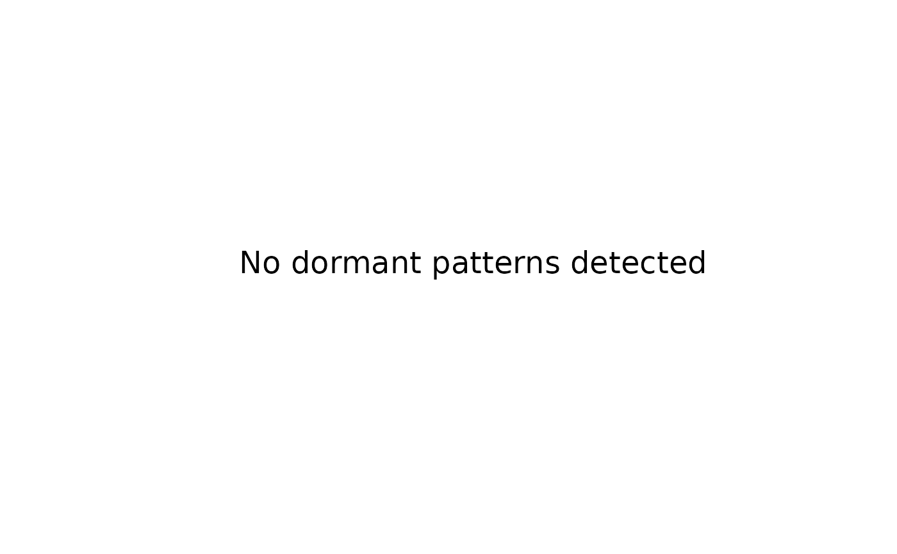

Visualization methods for dormancy analysis results. Creates informative plots showing dormant patterns, trigger regions, and risk landscapes.
Arguments
- x
An object of class "dormancy", "dormancy_map", "dormancy_depth", "dormancy_risk", or "awakening".
- type
Character. Type of plot to generate:
"overview" - General overview of results
"patterns" - Focus on detected patterns
"risk" - Risk-focused visualization
"timeline" - Time-based visualization (if applicable)
- ...
Additional arguments passed to plot functions.
Examples
set.seed(42)
n <- 500
x <- rnorm(n)
z <- sample(c(0, 1), n, replace = TRUE)
y <- ifelse(z == 1, 0.8 * x + rnorm(sum(z), 0, 0.3), rnorm(n))
#> Warning: longer object length is not a multiple of shorter object length
data <- data.frame(x = x, y = y, z = factor(z))
result <- dormancy_detect(data, method = "conditional")
plot(result)
